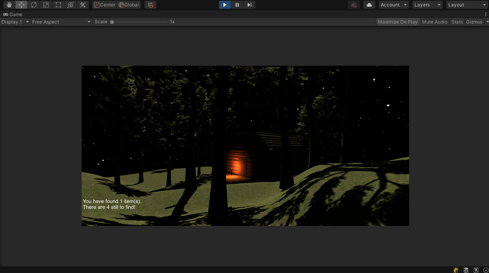

During second year we took part in a game development module where we were taught to use Unity in order to create a game environment of our own, from scratch. To begin this I had to first design the whole environment, characters and story using techniques we went through while looking at games that already existed. I decided on a concept based in a dark woodland area as I thought that this would be an environment that I could use all of the skills we learnt to create. These skills encompassed sound, light, character and environment design which we used a variety of softwares such as Adobe Audition, Maya and Unity itself to make.

I decided to create my story first as this would then help to make the environment and characters afterwards. The story I decided on was having a policeman try and find someone who has been lost in the woods as this would allow me to encompass the different techniques and a few different characters into my story to showcase different skills. I wanted to create a spooky environment by making a ghost character along with downloading sounds that would help enhance the atmosphere.
After creating these characters I used the terrain tools in Unity to make a hilly woodland environment for the player to explore. I then got all of the pieces which I created and downloaded for the game and put them into my Unity environment. Then, I began using the C# coding skills which we had been taught to make the player able to move around the woods, use a flashlight and collect items that I had scattered around the environment. I used the sound features in Unity to create a banging sound effect coming from the girl in the cabin. This sound got louder as the player got closer to the missing girl and therefore helped to enhance the atmosphere. This project taught me a lot of different skills as I had never done anything to do with game design before. I found the creating project from scratch really helped to develop my design skills as in this case I was using them for a completely different type of project, making my skills more versatile.